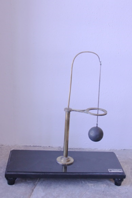

Anello di Gravesande
Scuola di provenienza: Liceo Statale "P. E. Imbriani", Avellino
Settore: Meccanica
Costruttori: Sconosciuto
Materiali: Legno, ottone, acciaio e ferro
Accessori: Nessuno
Stato di conservazione: Buono
Descrizione: Questo strumento è detto anche giroscopio ad anello, è costituito da un sostegno rigido in metallo con sfera appesa e anello di diametro leggermente superiore a quello della sfera. Questo dimostra che nella dilatazione cubica dei solidi si ha un aumento di spazi intermolecolari.